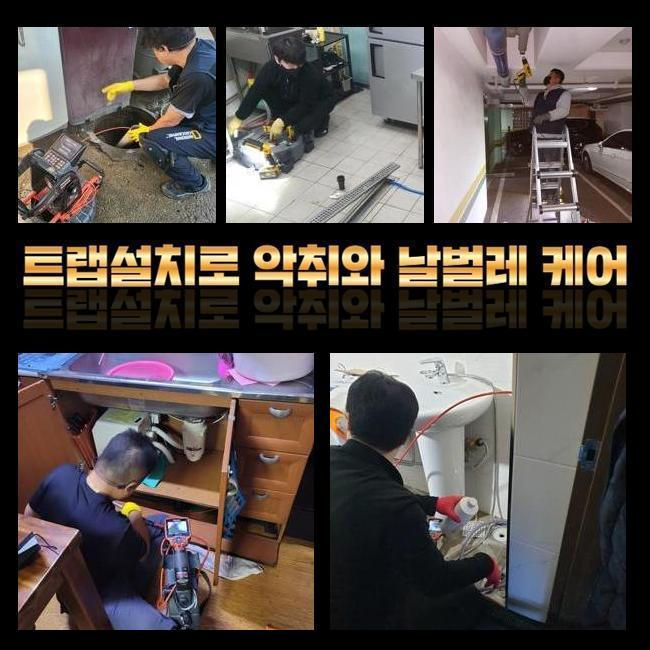
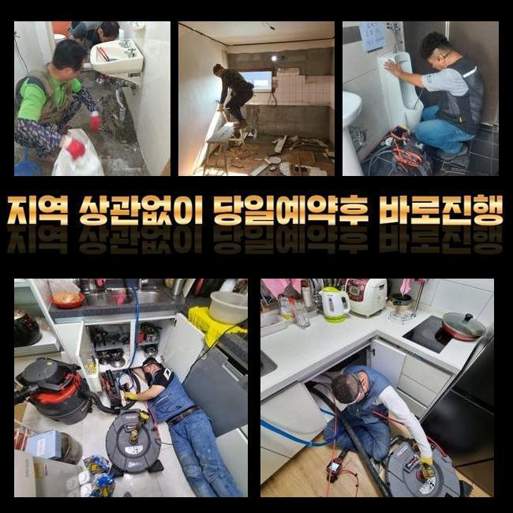
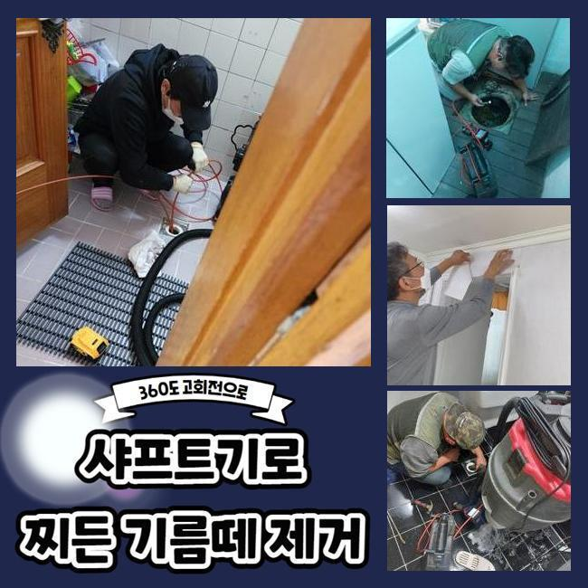
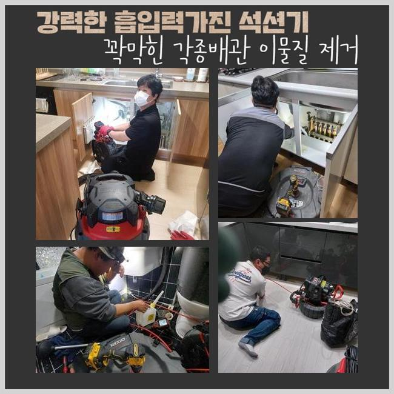
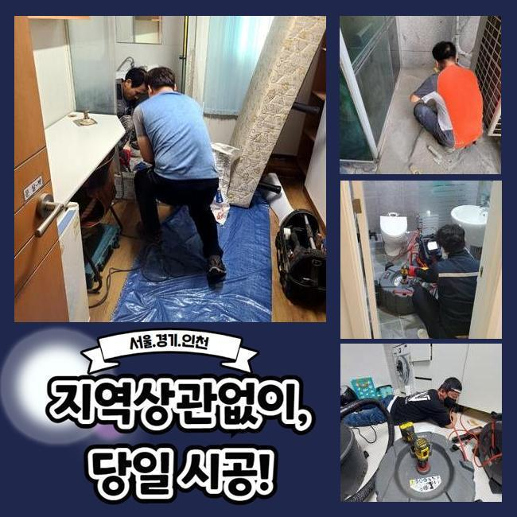

🏠 인천 당하동싱크대뚫음 신현원창동 하수구뚫는비용 배관공사
인천 싱크대막힘 전문 시공 후기

📋 작업 개요
- 위치: 인천
- 서비스 유형: 싱크대막힘, 하수구막힘, 배관막힘, 맨홀막힘, 역류해결, 뚫는업체, 배관청소, 고압세척, 설비공사
- 작업 일시: 2025. 4. 2. 15:31
- 업체명: 하수구수사대 (010-5615-2118)
🔍 문제 상황
인천 당하동싱크대뚫음 신현원창동 하수구뚫는비용 배관공사
배수구는 일반 가정집 또는 가게 등에서 필수적으로 배치하는 설비입니다
폐수를 배출하여 청결하고 깔끔한 생활을 영위 할 수 있도록 하며 오염원을 사전에 예방합니다
이와같은 하수관이 막히게 되는 경우 이물질이 누적되어 썩는 냄새가 나게되고 화장실이나 주방에서 다양한 문제가 발생합니다
이로 인해 하수가 역류하여 넘치거나 맑은 물을 이용할 수 없게되는 상황이 생기게 되며 불편한 상황이 발생합니다
아침에 배수구 막힘사고로 의뢰를 급히 맡기셔서 현장으로 출동했습니다
연립주택이라 일단 고객님의 집을 살펴보았습니다
점검을 해보니 집안에 계신 고객님께서 물을 쓰실때마다 부동전에 연결 되어있는 하수관에서 오염수가 거꾸로 치솟는 상황이 일어났습니다
특히나 화장실에서 물을 흘려보내면 배수라인을 따라 풍기는 지독한 냄새도 심각했습니다

🔎 원인 분석
💡 전문가 진단: 정밀 진단 장비를 사용하여 슬러지의 고착 여부를 판명하고 타격/세척 작업을 실시했습니다.
해당 문제들을 처리하기 위해서 내시경장비를 투입해서 중심 맨홀 내부상태를 확인했습니다
오염물질이 쌓이면서 하수관에서 썩는 냄새를 발생시키는 상황이였고 집안으로 역류하는 등의 사고가 발생할 수도 있기때문에 신속한 시공에 들어갔어요
중심관의 역할부터 자세하게 말씀 드려보겠습니다
중심 맨홀의 배수구는 일생생활 전반의 과정에서 나오는 폐수를 순환시키는 중심 역할을 합니다
메인 배관이 막힌 경우엔 안쪽에서부터 흐르지못한 오수가 부동전 방향의 배수구에서 역류하는 상황까지 발생합니다
안쪽으로 이어진 배수관만을 뚫는다고 해도 문제점을 해결하기 어렵기때문에 메인의 배관을 수리하셔야 이후 순환이 수월하게 진행되실 거예요
일반적으로 발견되는 작은 문제점은 손쉽게 해결하시는 경우가 많지만 사이즈가 큰 메인 배수구는 고도의 압력으로 세척하는 장비를 활용하여 벽에 굳어있는 침전물을 제거할 수 있습니다
고압세척장치의 노즐선은 하수관의 끝까지 모두 닿기때문에 정확하고 빠르게 청소가 가능해요
중심관에 고압장비를 사용해 음식찌꺼기와 침전물을 세척했습니다
이후에 내시경장비를 사용하여 하수가 정상적으로 나오는지 체크했어요

🔧 작업 과정
고객께서 하수관의 내부를 저희와 같이 체크하시고 배수구가 완벽하게 청소된 것까지 확인하시고 난 후에 마무리까지 부탁 하셨어요
두번째 현장지에 도착하여 배수관이 막힌 문제점을 작업했습니다
이번 의뢰인의 집에서도 베란다에서 물과 찌꺼기가 넘치는 일이 반복되며 이물질이 함께 노출되며 지독한 냄새까지 풍기고 있는 상태였습니다
이런 상황에서는 베란다의 배수구를 통해서 배관의 청소를 시작하는 것이 보편적이나 오늘같은 경우엔 어려운 구조의 트랩으로 시공을 진행하기가 복잡했어요
복잡한 구조의 트랩들은 벌레등의 유입을 막는것에 유리하겠지만 모양상 불순물이 누적되어 배수구가 막히게 되는 원인을 제공합니다
이러한 현장에서는 고압세척기기를 이용할 수 없는 구조가 대부분입니다
노즐케이블이 안들어가므로 고객분께 필요하지 않은 금액을 부담시키지 않기 위해서 이상적인 수리방법을 찾아내야 했습니다
복잡하고 어려운 트랩의 구조상 고압세척장비를 이용하면 배수관이 손상될 수 있으므로 샤프트장치를 이용하여 문제점을 해결하기로 했어요
샤프트기는 회전하는 힘을 이용하여 하수관에 적재된 이물질들을 세척합니다
샤프트기는 배수관을 긁거나 피해주지 않으면서 깊숙한 곳에 투입될 수 있어요
장비의 끝쪽에 비질을 하는 듯한 솔을 장착하고 불순물을 세척할 수 있기때문에 좁은 배관에도 빠르게 진입이 가능하여 하수관의 끝에 누적된 침전물도 완전하게 제거합니다
한두번의 작업으로는 완벽하게 제거되지 않아서 샤프트장비를 계속해서 이용하여 딱딱하게 변형된 침전물을 청소했습니다
배관을 모두 청소하고 배수가 수월하게 이루어지는지 체크했고 고객분께서도 문제가 발생했던 하수관을 저희와 함께 보시고나서 만족하시며 감사인사를 전하셨습니다
배수구가 막힌 경우에 바로 대응하지 않으면 하수라인 내부에 누적 되어있는 노폐물이 부패되면서 지독한 냄새까지 올라오며 배수가 잘 이루어지지 않으므로 오염된 물이 역으로 치솟는 문제점이 생겨납니다
하수라인 안쪽에서 압력이 높아지게 되면 하수관이 손상되어 파손의 위험이 생기며 고객의 금전적인 부담과 많은 시간까지 들여야합니다


✅ 작업 완료
하수관 역류사고가 발생하셨다면 전문 업체에 의뢰하여 최대한 빠른 시일내에 대책을 준비하셔야 합니다
이번 현장에선 하수관 역류사고를 처리하였고 하수관 악취등의 세척까지 완벽하게 마무리했습니다
의뢰인의 수도 사용 습관들을 개선하셔야 한다고 말씀 드리고 배수구 문제 또한 다시 일어나지 않게끔 확실하게 체크했습니다
배수구 문제점이 발견되신 경우에 편안하게 저희 전문진에게 전화 해주시면 바로 처리 해드리겠습니다



⚠️ 주방 싱크대 배관 막힘 예방 수칙
- ✅ 기름기가 묻은 식기나 프라이팬은 설거지 전 키친타올로 반드시 기름때를 닦아내세요.
- ✅ 주기적으로 싱크대 개수대에 뜨거운 물을 가득 받아 한 번에 내려 배관 내부 기름을 씻어내세요.
- ✅ 배수구 거름망을 미세한 필터로 사용하시고 음식물 찌꺼기가 틈으로 새어 들지 않게 관리하세요.
- ✅ 베이킹소다와 식초를 뜨거운 물과 함께 일주일에 한 번씩 부어주면 배관 살균과 막힘 예방에 좋습니다.
💡 핵심 정리
- 확실한 장비 작업(내시경 점검 및 샤프트 스케일링)으로 원인을 뿌리 뽑습니다.
- 작업 후 1년 이내에 동일한 부위 재발 시 100% 무상 A/S 서비스를 보장합니다.
- 서울 · 경기 · 인천 전 지역에 24시간 언제든 긴급 출동할 수 있도록 항시 대기 중입니다.
❓ 자주 묻는 질문 (FAQ)
🚨 인천 싱크대막힘 문제로 고민이신가요?
정확한 원인 진단과 확실한 시공으로 재발 없는 해결을 약속드립니다.
24시간 긴급 출동 | 서울 · 경기 · 인천 전지역 | 1년 내 재발 시 무상 A/S